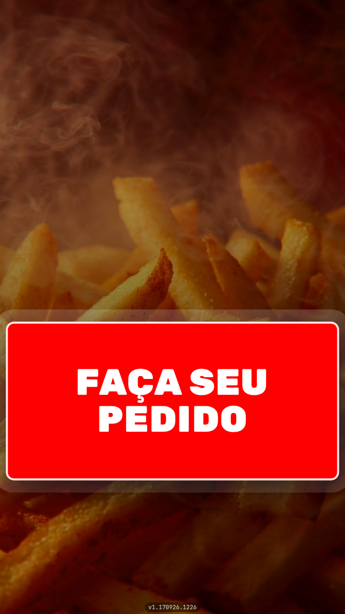

<!-- A capa nomeia o recurso e entrega os dois eixos na mesma linha: PEDIR e
     PAGAR. So "o cliente pede sozinho" seria meio recurso — cardapio de QR Code
     tambem faz pedir. O que o totem acrescenta e o pagamento terminar ali, e
     por isso o "e paga" e a palavra em vermelho.

     Nada aqui afirma nada sobre a loja de quem le: nao ha fila, nao ha
     atendente, nao ha economia prometida. Todas as frases sao do aparelho.

     A imagem e o APARELHO INTEIRO, e nao um recorte de tela. O assunto e uma
     pessoa de pe na frente de uma maquina: sem a maquina, a peca vira cardapio
     digital. O totem vai reto (mockups.md: armario em pe girado le como armario
     tombando) e centralizado, porque divide a faixa com nada.

     Sangra so pela COLUNA. O painel — leitor, impressora e pinpad — e o que faz
     a peca ler "autoatendimento" em vez de "tela grande", e por isso ele cabe
     inteiro dentro do slide; quem sai pela base e a coluna, que a borda de
     baixo transforma em chao.

     A tela e a captura de 720p, nao a de 1080p: o aplicativo desenha o botao em
     px fixo, e reduzida para 400 px de aparelho a versao grande transforma o
     FACA SEU PEDIDO num risco vermelho. -->
<div class="slide slide--capa">
  <div class="topo">
    <span class="logo"></span>
    <span class="contador">1 de 7</span>
  </div>

  <div class="pilha g24" style="margin-top: 26px; max-width: 900px">
    <span class="pilula">Totem de Autoatendimento</span>
    <h1 class="titulo titulo--medio">
      O cliente pede <span class="destaque">e paga</span><br>sozinho no totem
    </h1>
    <!-- Uma linha, e nao duas: com a segunda linha o topo do aparelho subia em
         cima dos rabos das letras. Encurtar o subtitulo custou menos do que
         encolher o totem, que e a imagem da capa. -->
    <p class="subtitulo">Do primeiro toque ao pagamento.</p>
  </div>

  <div class="sangria" style="top: 520px; right: auto; left: 50%;
                              transform: translateX(-50%)">
    <div class="totem" style="width: 400px; --coluna: 240px">
      <div class="totem__tela">
        
      </div>
      <div class="totem__painel">
        <div class="totem__leitor"></div>
        <div class="totem__impressora"></div>
        <div class="totem__pinpad">
          <div class="totem__tecla"><span></span><span></span><span></span></div>
          <div class="totem__tecla"><span></span><span></span><span></span></div>
          <div class="totem__tecla"><span></span><span></span><span></span></div>
        </div>
      </div>
      <div class="totem__coluna"></div>
      <div class="totem__base"></div>
    </div>
  </div>
</div>
